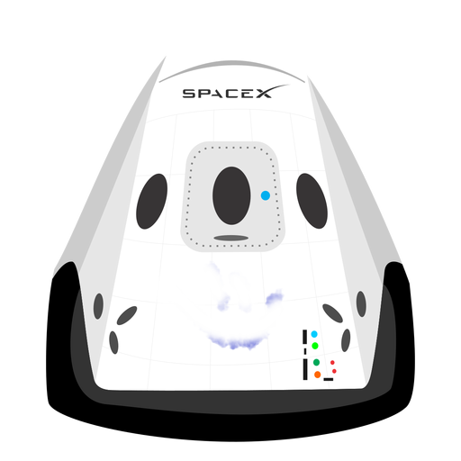

Hiperblog
Tu blog de cabeceraPost Platzi Love
Párrafo de inicio, donde vamos a explicar las cosas increíbles que se pueden hacer con ramas.
Los blogs son la mejor forma de compartir información y tus ideas. Mucho más que ir a conferencias o salir en Youtube. Excepto si eres un rockstar. Pero estadísticamente no lo eres... por ahora.
Subcríbete y dale like